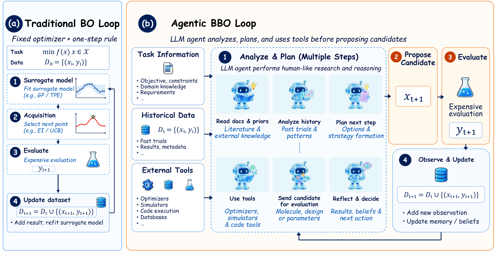
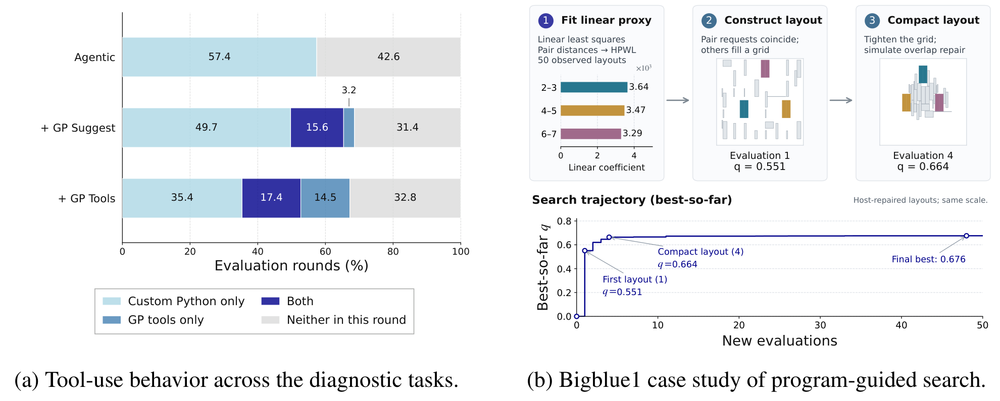
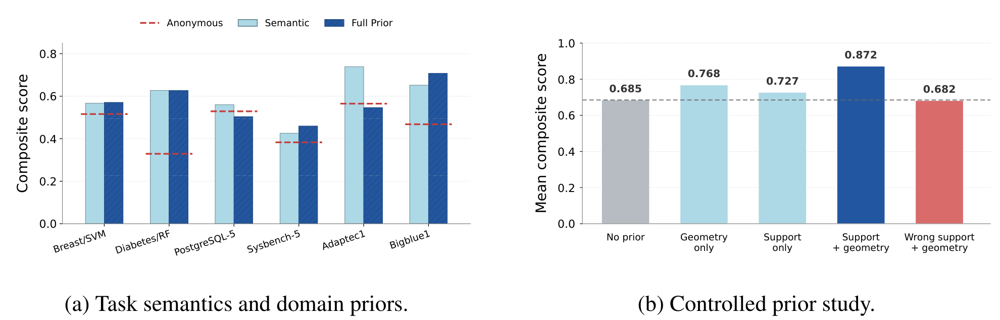
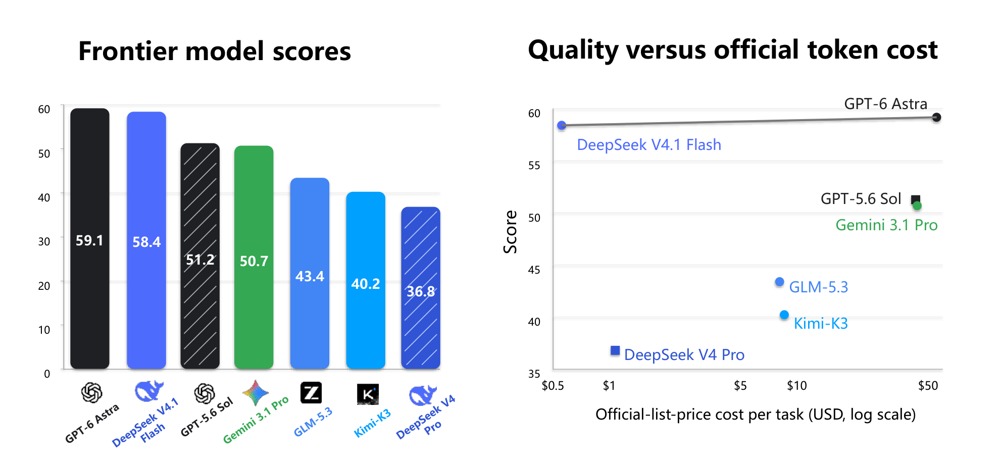

AgenticBBO-Bench：让语言、计算与优化工具共同参与科学黑箱搜索
论文原文 ↗Ming Chen 等，A Closer Look at Agentic BBO: Benchmarking LLM Agents for Black-Box Optimization，arXiv，2026。论文页面 · · 代码
当一次计算或实验成本很高，优化的核心问题是下一次评估哪个候选。数值优化器主要利用历史坐标和分数，LLM 智能体还可以理解变量含义、编写分析程序、调用优化工具，并依据反馈调整决策。现有研究各用不同任务与配置，难以比较这些能力的实际作用。AgenticBBO-Bench 用统一的有限评估预算连接五个领域，再研究工具、任务信息和 LLM 搜索角色怎样影响结果。
方法怎么做：给昂贵评估之前的决策过程更多组织能力
黑箱优化允许提交候选、取得目标分数，而目标表达式和梯度由评估器持有。传统贝叶斯优化先用历史数据拟合便宜的代理模型，预测候选表现与不确定性，再按采集规则选择下一点。论文的 Direct 配置直接让 LLM 根据任务和历史返回候选；Agentic 配置则提供持续保留的工作区，使智能体可以在提交前开展多步分析和工具操作。
一个回合中，智能体读取任务卡、参数定义和历史结果，自行编写 Python、拟合临时代理或使用开放的优化工具，最后提交完整配置或分子字符串。主机检查候选并调用目标评分器，返回的分数加入搜索历史，供下一回合使用。新增能力落在“如何组织下一次评估前的分析”上。

原图 2：左侧按固定的代理—采集—评估流程选点；右侧由智能体组织分析与工具使用，再提交候选并接收反馈。
以分子任务 Median1 为例，目标是找到同时接近樟脑和薄荷醇的结构。输入包含两种参考分子的 SMILES、50 个已有分子及分数，以及 200 次新增评分预算。SMILES 用字符记录原子、键、分支和闭环；评分器解析成分子图，提取 Morgan 指纹表示局部原子环境，再计算与两个参考结构的 Tanimoto 相似度，并用几何平均合并。智能体通过生成、修改和评估结构，搜索能兼顾两种相似性的分子。
芯片布置任务展示了更完整的分析轨迹。智能体要安排 32 个宏单元的位置，降低近似连线长度 HPWL，即连接引脚外包矩形的半周长总和。它先用 50 个初始布局计算模块对距离，拟合“距离特征—HPWL”的线性代理；较大系数提示应优先拉近的模块对。随后让关键模块靠近、其余放在网格上，提交给主机修复几何冲突并计分，再依据结果收紧布局。该轨迹的最好归一化分数从首次新评估的 0.551 提高到最终 0.676。
这条链从已有布局与分数开始，经距离表示、代理分析、候选布局和几何修复，回到目标计分；智能体用便宜的内部计算改善昂贵查询的选择。

原图 3：左侧统计自编 Python 与 GP 工具的使用，右侧展示代理系数、修复后布局和搜索曲线，连接内部分析与候选改善。
完整基准含 77 个任务，覆盖数学函数、机器学习超参数、数据库调优、芯片布置和分子设计。各方法共享初始观测与新增目标评估预算。评价同时考虑尽早找到好结果和最终最佳结果：归一化的最好分数轨迹平均占 70%，终点占 30%。这一协议让不同领域都以有限目标查询下的搜索表现进行比较。
主要结果：智能体有效，工具、先验和分工影响收益
**Agentic 在五个领域的平均分均高于 Direct，并在四个领域高于数值对照。**例如分子任务为 0.840 对 0.565，数学函数为 0.661 对 0.460。数学、超参数、芯片与分子四类中，Agentic 超过本次比较的最好数值方法；数据库任务则由 TuRBO 表现最好。TuRBO 围绕有希望的区域建立局部代理，并随搜索进展调整区域，说明不同问题结构适合不同搜索组织方式。
**额外工具并非稳定加分项，准确的任务含义更有帮助。**作者在受控子集中逐步开放 GP 候选建议及更细的预测、诊断与搜索控制，平均表现没有随工具数量增加而提高。基础智能体本来就能编程拟合代理，关键是工具与当前任务结构、搜索阶段是否匹配。
任务信息实验比较匿名坐标、真实变量含义以及进一步加入的领域先验。恢复任务名称、变量类型和含义后，平均分从 0.465 提高到 0.595；再增加具体先验，平均为 0.569。为理解这种差异，作者设计只有四个变量真正影响目标的匿名函数：正确的有效变量名单加上正确搜索几何，取得 0.872，高于无先验的 0.685；几何正确但变量名单错误时为 0.682。具体先验会直接改变预算投向，内容准确、能够指导动作时才最有价值。

原图 4：左侧比较不同信息配置，右侧用受控函数拆开有效变量名单与搜索几何，展示正确先验的收益和错误具体知识的影响。
**数值优化器能够继续利用智能体建立的搜索轨迹。**在数学函数和超参数任务中，让 LLM 先探索，再交给 TuRBO，平均分为 0.570，接近全程 Agentic 的 0.569，并高于从共同初始数据直接运行 TuRBO 的 0.475。前半程智能体找到的有用区域和观测，可以成为后半程数值搜索的起点。论文还研究离线生成优化程序，比较持续在线决策与预先写好可复用策略这两种参与方式。
在五任务前沿挑战中，作者用相同 Codex 运行框架比较七个模型。GPT-6 Astra 与 DeepSeek V4.1 Flash 的平均分接近，分别为 0.591 与 0.584，位于表现—推理成本的 Pareto 前沿：在这些受测配置中，没有另一模型同时更便宜且分数更高。

原图 1：左侧为五任务平均得分，右侧将得分与 token 费用对应，横轴为对数刻度。前沿上的模型提供不同成本与表现的选择。
领域贡献：让科学优化智能体的设计选择可以共同比较
AgenticBBO-Bench 将跨领域交互与有限预算统一起来，使语言理解、程序分析、数值工具和反馈决策可以在同一实验底座上比较。结果同时给出可操作的设计认识：任务语义能够帮助搜索，具体先验需要准确，工具应按问题选择，LLM 建立的探索也能交给数值方法继续利用。它为未来模型与智能体系统提供共同排行榜，并把通用黑箱优化推进到更灵活的智能体操作流程。
原始摘要完整中文译文
黑箱优化出现在许多科学和工程问题中，这些问题的目标评估成本高昂、次数有限。近期的大型语言模型智能体提供了一种新的黑箱优化方式，将任务语义、计算、优化工具与反馈驱动决策相结合；由于集成了数学上严谨的工具，它们展现出很大潜力。然而，现有智能体黑箱优化研究使用不同的任务领域和系统配置，使结果难以比较，也难以隔离单个设计选择的影响。因此，我们提出 AgenticBBO-Bench，一个跨领域的智能体黑箱优化基准，在统一的有限预算评估协议下，涵盖合成函数、超参数优化、数据库调优、芯片设计和分子设计。在实验中，智能体黑箱优化在全部五个领域都取得了高于直接 LLM 方法的任务族平均得分，并在其中四个领域超越最佳数值优化器。我们进一步研究了塑造智能体表现的三个因素：优化工具、任务信息与先验知识，以及 LLM 在搜索过程中的角色。结果表明，增加数值工具并不总能提高表现；任务语义普遍有用，而更具体的先验可靠性较低；数值优化器能够有效吸收智能体建立的搜索轨迹带来的收益。最后，我们在 AgenticBBO-Bench 中引入一个五任务前沿挑战，并在 Codex 智能体运行框架下评估七个 LLM；在所评估的模型中，GPT-6 Astra 和 DeepSeek V4.1 Flash 位于表现与成本的 Pareto 前沿。AgenticBBO-Bench 为比较未来通用模型和智能体系统提供了共同、标准化的排行榜，为通过智能体操作实现通用黑箱优化提供启示。我们的代码公开于 https://github.com/lamda-bbo/agentic-bbo。